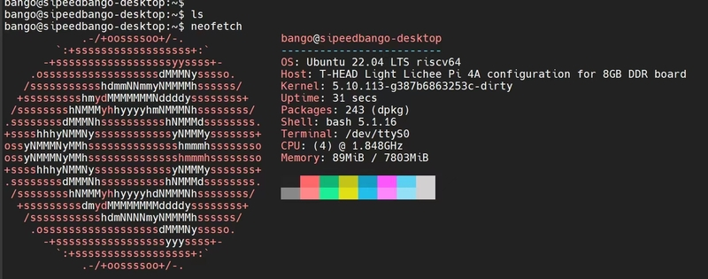
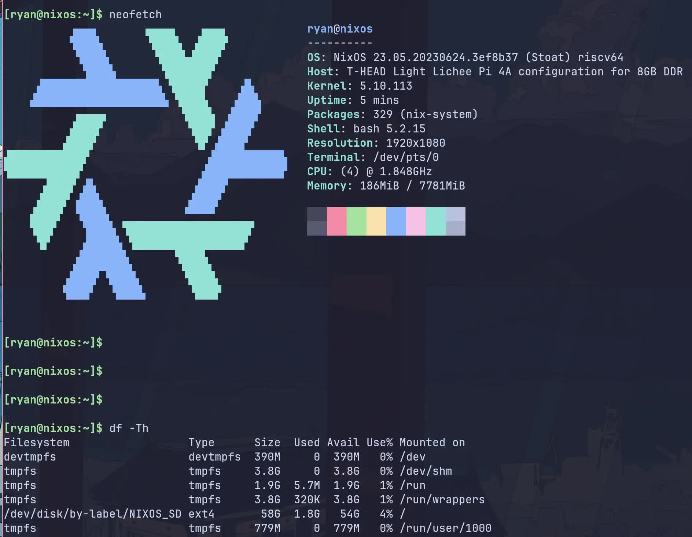

English
EnglishCollection of images
Update history
| Date | Version | Author | Update content |
|---|---|---|---|
| 2026-01-30 | v1.2 | Kevin.MX |
|
| 2023-10-23 | v1.2 | ztd |
|
| 2023-07-19 | v1.1 | ztd |
|
| 2023-05-08 | v1.0 | wonder |
|
Supported kernels
Currently XuanTie SDK / RevyOS uses Linux Kernel 5.10: https://github.com/revyos/th1520-linux-kernel
Linux mainline support is currently WIP, the main contributor of this is Jisheng Zhang
RevyOS

Download Links:
ISCAS mirror: click me
Mega Cloud Storage (≤20240602): click me
The document here about RevyOS might not be up-to-date; please see RevyOS Docs for latest information: https://docs.revyos.dev/
- LPI4A_20240111_BASIC.zip
- Release Date: Jan 11, 2024
- Kernel: 5.10
- Root Filesystem: ext4, 4.3GB
- Preinstalled Software Packages:
- Development: python3.11
- Office: libreoffice suite
- Browser: chromium
- Media: 4K video players like Parole(Supports hardware acceleration, recommended for priority use), VLC, GIMP
- changelog:
20230706:- Fixed HDMI display device and HDMI audio device recognition issues.
- Fixed Bluetooth issues. Bluetooth devices now function properly, and Bluetooth headphones can play audio normally.
- Fixed the issue with the browser shortcut in the bottom launch bar not being available. It is now clickable to access Chromium.
- Fixed kernel panic issue caused by prolonged connection to a USB camera.
- Fixed the issue with recognizing 16GB of memory. To fully recognize 16GB of memory, please update this image.
- Fixed audio quality issue when playing HDMI audio in Chromium.
- Fixed font pixel loss issue when using dual monitors with different resolutions.
- Fixed cursor misalignment issue.
- Fixed the mismatch between NPU driver kernel and user versions.
- Fixed the failure to burn root file system larger than 4GB.
- Fixed cursor flickering issue.
- Added support for Wifi6 driver.
- Fixed MIPI screen brightness not being adjustable
- Fixed Bluetooth not working with new WIFI/BT module
- Usage Instructions:
- Auto login enabled, default login user is sipeed
- Sudo without password enabled
- NPU drivers loaded automatically, no manual initialization needed
- Supports both HDMI and MIPI display, switch in boot menu
- Boot menu config at /boot/extlinux/extlinux.conf in boot.ext4. 3 options, distinguished by suffix:
- Suffix (HDMI only) - HDMI only
- Suffix (HDMI and MIPI) - Dual display
- Suffix (rescue target) - Recovery
- Default is HDMI only. Two ways to switch to MIPI:
- Connect serial tool, press 2 to choose MIPI display when boot menu appears, one time only
- Edit extlinux.conf, change default l0 to default l1 to change default to MIPI
- Boot menu config at /boot/extlinux/extlinux.conf in boot.ext4. 3 options, distinguished by suffix:
- The zip contains two u-boot, note the suffix and device parameters when burning
- u-boot with 16g suffix is for 16GB memory, no suffix is for 8GB memory
- Known Issues:
- LPI4A_20240111_FULL.zip
- Release Date: Jan 11, 2024
- Kernel: 5.10
- Root Filesystem: ext4, 9.7GB
- Preinstalled Software Packages:
- Development: python3.11, GCC, VScode, Kicad (with demo projects), AI env (with precompiled yolov5n/yolov5s executables)
- Office: libreoffice suite
- Browser: chromium
- Media: 4K video players like Parole (Supports hardware acceleration, recommended for priority use.with demo 4K videos on desktop), VLC, GIMP, video editor Kdenlive (with demo video clips), kodi
- Game: SuperTuxKart
- Other: btop, neofetch
- changelog:
20230706:- Fixed HDMI display device and HDMI audio device recognition issues.
- Fixed Bluetooth issues. Bluetooth devices now function properly, and Bluetooth headphones can play audio normally.
- Fixed the issue with the browser shortcut in the bottom launch bar not being available. It is now clickable to access Chromium.
- Fixed kernel panic issue caused by prolonged connection to a USB camera.
- Fixed the issue with recognizing 16GB of memory. To fully recognize 16GB of memory, please update this image.
- Fixed audio quality issue when playing HDMI audio in Chromium.
- Fixed font pixel loss issue when using dual monitors with different resolutions.
- Fixed cursor misalignment issue.
- Fixed the mismatch between NPU driver kernel and user versions.
- Fixed the failure to burn root file system larger than 4GB.
- Fixed cursor flickering issue.
- Added support for Wifi6 driver.
- Fixed MIPI screen brightness not being adjustable
- Fixed Bluetooth not working with new WIFI/BT module
- Usage Instructions:
- The image occupies a large amount of space, and the internal testing version cannot use this image due to the eMMC capacity being only 8GB. Therefore, internal testing users should use the BASIC version image;
- Auto login enabled, default login user is sipeed
- Sudo without password enabled
- NPU drivers loaded automatically, no manual initialization needed
- Supports both HDMI and MIPI display, switch in boot menu
- Boot menu config at /boot/extlinux/extlinux.conf in boot.ext4. 3 options, distinguished by suffix:
- Suffix (HDMI only) - HDMI only
- Suffix (HDMI and MIPI) - Dual display
- Suffix (rescue target) - Recovery
- Default is HDMI only. Two ways to switch to MIPI:
- Connect serial tool, press 2 to choose MIPI display when boot menu appears, one time only
- Edit extlinux.conf, change default l0 to default l1 to change default to MIPI
- Boot menu config at /boot/extlinux/extlinux.conf in boot.ext4. 3 options, distinguished by suffix:
- The zip contains two u-boot, note the suffix and device parameters when burning
- u-boot with 16g suffix is for 16GB memory, no suffix is for 8GB memory
- Known Issues:
Official Sipeed image
The image for the LicheePi 4A is updated irregularly. The initial image may not be stable, or it may not be able to fully utilize the performance of the TH1520. Please follow the steps below to get the latest image.
The official Sipeed image is based on an adapted Debian.
There may be problems with the memory identification of some 16G memory core boards, which may cause the system to crash when the memory usage is high.
The default image's account and password configurations is:
User: debian，password: debian;
User: sipeed，password: licheepi;
root has no password by default.
Memory Problem Repair Instructions
IMPORTANT：16GB memory board sendout before 2023.8.1 have a buggy images that can't correctly recognize 16GB memory (occupy errors running big applications), please follow the next instructions to fix this error.
Please use the following command to burn a new u-boot to the board. The u-boot used by 16G memory is in the Mega Cloud Storage link, and can also be downloaded from this link
The relevant files are in the 20230803_tempfix.zip compressed package.
(images of 0721 and later versions can be used normally, no need to replace it with the file here)
sudo ./fastboot flash ram ./images/u-boot-with-spl-lpi4a-16g.bin
sudo ./fastboot reboot
sleep 1
sudo ./fastboot flash ram ./images/u-boot-with-spl-lpi4a-16g.bin
# If there is no device tree corresponding to 16G ddr in the boot.ext4 you use, you need to burn the boot.ext4 corresponding to 16G ddr
sudo ./fastboot flash boot ./images/boot.ext4
OpenWRT
Android
Readme and image download link: Click me
Prebuild Image Download Links:
Mega Cloud Storage：click me
The Android 13 SDK is still in its infancy, and the problems will be gradually fixed
The precompiled image file of Android 13 is provided in the network disk download link of Sipeed official image, and the burning method after downloading is as follows. Please use the version downloaded from here for the fastboot tool:
https://developer.android.com/tools/releases/platform-tools
There are also fastboot files in the network disk.
#Burn uboot and initialize boot environment variables
fastboot flash ram u-boot-with-spl.bin
fastboot reboot
fastboot flash uboot u-boot-with-spl.bin
#Burn all partitions
#In the non-boot burning mode, you can enter the command fastboot usb 0 in the uboot command line to burn the partition separately
fastboot flash bootpart bootpart.ext4
fastboot flash boot boot.img
fastboot flash vendor_boot vendor_boot.img
fastboot flash super super.img
fastboot flash userdata userdata.img
fastboot flash vbmeta vbmeta.img
fastboot flash vbmeta_system vbmeta_system.img
#Initialize metadata and misc partition
fastboot erase metadata
fastboot erase misc
Third-party images
The images provided by third parties are listed here for informational purposes only. Sipeed does not guarantee the availability and stability of these images.
openEuler

Download: Click me
Twitter: https://twitter.com/openEuler
DeepinOS

Readme and image download link: Click me
openKylin

Readme link: Click me
openKylin V1.0 Download address
armbian

Project address: Click me
Fedora (Fedora-V Force)
Link: https://images.fedoravforce.org/LicheePi%204A
Fedora (chainsx)
Project address: Click me
Ubuntu (rootfs only)

NixOS (unofficial)

Project address: Click me
Gentoo
Project address: Click me
The link below shows how to create a Gentoo Linux system from stage3
Deplay Gentoo Linux Click me